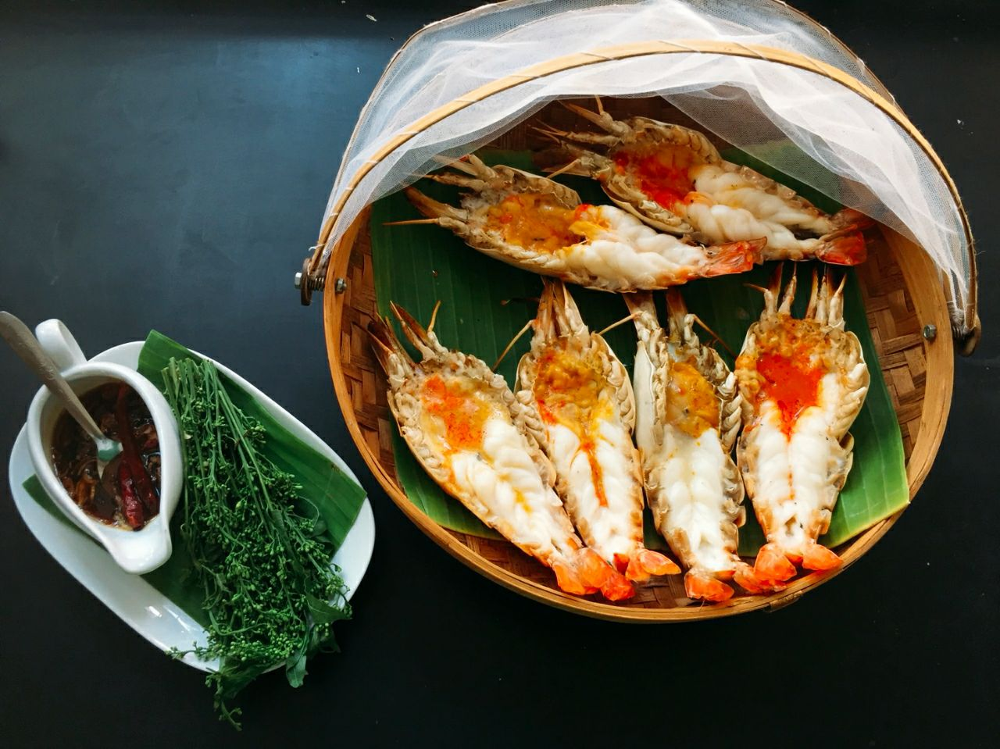
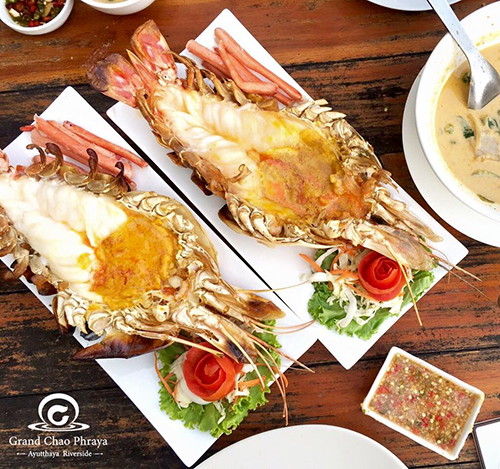
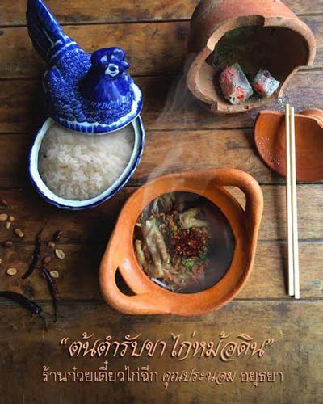

ร้านอาหาร

ร้านอาหารบ้านอยุธยารมย์
อาหารไทยรสชาติอร่อย ที่มีเมนูอาหารอร่อยหลากหลายเมนู ขอเริ่มต้นด้วยแกงเขียวหวานไก่โรตี รสชาติเข้มข้นถึงกะทิ และเครื่องพริกแกง ต่อด้วยน้ำพริกปลาย่างพร้อมผักเคียง ปลากะพงทอดราดซอสเปรี้ยวหวานกับมัสมั่นเนื้อ และปิดท้ายของหวานอร่อยๆ ข้าวเหนียวมะม่วง พร้อมนั่งทานกับบรรยากาศริมแม่น้ำ และถ้าได้นั่งมองพระอาทิตย์ตกดินจะสวยมากๆ เลย ราคาเริ่มต้นที่ 160 บาท
ที่อยู่1/1 หมู่ 7 ต.บ้านป้อม อำเภอพระนครศรีอยุธยา จ.พระนครศรีอยุธยา
เบอร์ติดต่อ035-801-279
เวลา เปิด-ปิด10.00-21.00 น.
ประเภทร้านThai ( อาหารไทย )
ร้านอาหารริมน้ำ แกรนด์เจ้าพระญา อยุธยา
จากวัดพนัญเชิงวรวิหาร อำเภอพระนครศรีอยุธยา เดินทางเพียง 10 นาที ก็จะถึงร้านอาหารริมน้ำ แกรนด์เจ้าพระญา อยุธยา ร้านที่เหมาะสำหรับพาครอบครัวมาทานกุ้งแม่น้ำ ทางร้านมีกุ้งเผาเตาถ่านย่างสดๆ มันเยิ้มๆ ให้ทานเต็มที่ ราคา 3-4 ตัว ต่อกิโลกรัม ราคา 1,800 บาท หากมาทานในช่วงสุดสัปดาห์ ควรโทร.จองโต๊ะล่วงหน้าค่ะ
ที่อยู่42/1 หมู่ 4 ต.บ้านรุน อ.พระนครศรีอยุธยา จ.พระนครศรีอยุธยา (อยู่ถนนเลี่ยงเมืองอยุธยา ถ้ามาจากกทม. จะถึงก่อนตัวเมืองอยุธยา)
เบอร์ติดต่อ082-4426546, 081-9421666
เวลา เปิด-ปิดเปิดทุกวัน 10:00 - 22:00 น.
ประเภทร้านThai ( อาหารไทย )Seafood ( อาหารทะเล )


ร้านก๋วยเตี๋ยวไก่ฉีก คุณประนอม
อีกหนึ่งร้านก๋วยเตี๋ยวชื่อดังในอยุธยา เป็นร้านตึกแถวสองคูหา ครัวอยู่ทางหน้าร้าน สังเกตได้ว่ามีคนมุงหน้าร้านอยู่ตลอดเวลา ถึงแม้ว่าบรรยากาศโดยรวมในร้านจะดูง่าย ๆ สบาย ๆ แต่ขอบอกว่าทีเด็ดอยู่ที่รสชาติก๋วยเตี๋ยวที่อร่อยถึงใจ ของเด็ดของโดนของทางร้าน ได้แก่ "ก๋วยเตี๋ยวต้มยำไก่ฉีก" รสชาติน้ำต้มยำอร่อยจนแทบไม่ต้องปรุงเพิ่มเลยทีเดียว พร้อมด้วยไก่ฉีกแบบเต็ม ๆ คำ หรือจะเป็น "เกาเหลาขาไก่หม้อดิน" ที่จัดเต็มกับหม้อดินขนาดใหญ่วางอยู่บนเตา ภายในบรรจุด้วยตีนไก่ เสิร์ฟให้ทานกันแบบร้อน ๆ
แต่เราขอแนะนำนิดหนึ่งว่าหากใครอยากมาทานร้านนี้แต่ไม่อยากผิดหวัง เพราะของหมด อย่างน้อยควรจะต้องมาก่อนเที่ยงถึงจะดีที่สุด (ถ้าเป็นวันธรรมดาช่วงหลังเที่ยงน่าจะยังพอไหว) แต่พอหลังจากเลยบ่ายสองเป็นต้นไป คุณอาจจะเห็นแต่หม้อเปล่า ๆ วางทิ้งไว้ให้ดูต่างหน้า
ที่อยู่ : มีทั้งหมด 2 สาขา สามารถดูรายละเอียดได้ที่ เฟซบุ๊ก ร้านก๋วยเตี๋ยวไก่ฉีก คุณประนอม อยุธยา
เบอร์โทรศัพท์ : สาขาหน้าวัดพนมยงค์ โทร. 035 231 476, สาขาตลาดหัวรอ โทร. 035 251 337
เวลาเปิด-ปิด : สาขาหน้าวัดพนมยงค์ ทุกวัน เวลา 09.00-16.00 น., สาขาตลาดหัวรอ ทุกวัน เวลา 17.00-21.30 น.
เว็บไซต์ : เฟซบุ๊ก ร้านก๋วยเตี๋ยวไก่ฉีก คุณประนอม อยุธยา
บ้านข้าวหนม
ร้านขนมไทยเล็ก ๆ ที่ไม่ว่าใครเมื่อเปิดประตูร้านเข้าไป ก็จะสัมผัสได้กับบรรยากาศความเป็นกันเอง ลูกค้าหลายคนพูดเป็นเสียงเดียวกันว่า ชอบไอเดียของร้านที่เน้นไปที่การขายขนมไทย แทนที่จะเน้นขายเบเกอรี่เหมือนร้านคาเฟ่ทั่วไปนั่นเอง
ขนมไทยที่นี่เน้นไปที่คุณภาพความสดและใหม่ ที่ไม่ได้ทำแบบค้างคืน เช่น "ขนมต้ม" ที่ได้รสของกลิ่นควันเทียน "ขนมสอดไส้" รสชาติหวานหอมกะทิอร่อยถูกใจ "ขนมจ่ามงกุฎ" ที่ปั้นออกมาได้น่ารักน่าชัง รูปร่างเล็กกำลังดี เหมาะเอาเข้าปาก "ข้ามต้มมัด" กลิ่นหอม หวานมันกะทิ ข้าวเหนียวหนุบหนับกำลังดี
ไม่หมดเพียงเท่านี้ ทางร้านยังมีขนมหวานอย่างอื่นอีกเพียบ เช่น วุ้นกะทิ ลูกชุบ ฝอยทอง ทองหยอด เม็ดขนุน เป็นต้น พร้อมด้วยเมนูเครื่องดื่มอร่อย ๆ รสชาติกลมกล่อม ท่ามกลางบรรยากาศความเป็นกันเองของทางร้าน ยิ่งทำให้ขนมหวานที่นี่น่าทานและหวานเพิ่มเป็นเท่าตัว
ที่อยู่ : 2/10 ถนนอู่ทอง ตำบลหอรัตนไชย อำเภอพระนครศรีอยุธยา จังหวัดอยุธยา
เบอร์โทรศัพท์ : 097 921 9465
เวลาเปิด-ปิด : วันจันทร์-ศุกร์ เวลา 08.00-19.00 น. และวันเสาร์-อาทิตย์ เวลา 09.00-19.00 น.
เว็บไซต์ : เฟซบุ๊ก ร้านก๋วยเตี๋ยวไก่ฉีก คุณประนอม อยุธยา